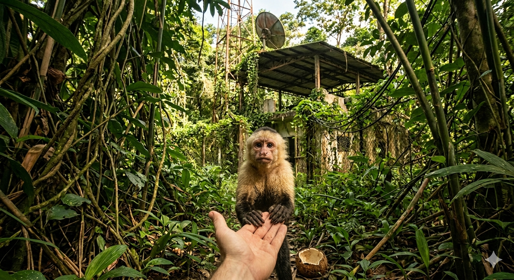

Du knackst die Kokosnuss mühsam auf und teilst das frische Wasser und das Fruchtfleisch mit dem kleinen Affen. Er trinkt gierig. Schon nach wenigen Momenten kehrt das Leben in seine großen Augen zurück.
Er springt auf, greift dankbar nach deiner Hand und blickt dich auffordernd an. Er will, dass du ihm folgst! Der Affe führt dich geschickt durch ein extrem dichtes Gebüsch, das du alleine niemals betreten hättest. Nach einem kurzen Marsch stößt ihr auf eine alte, halb vom Dschungel verschlungene Funkstation. Sie sieht verlassen aus, aber das Dach ist intakt.